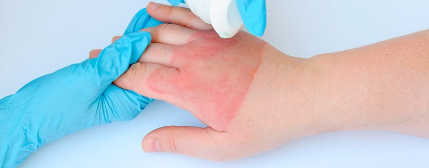

– Queimaduras térmicas: são provocadas por fontes de calor como o fogo, líquidos ferventes, vapores, objetos quentes e excesso de exposição ao sol;
– Queimaduras químicas: são provocadas por substância química em contato com a pele ou mesmo através das roupas;
– Queimaduras por eletricidade: são provocadas por descargas elétricas.
1º Grau (eritema, rubor ou sinal de Christinson): pele avermelhada causada pela vasodilatação dos vasos mais superficiais que pode ser seguida por tumefação e diapedese. Há ardência e sensibilidade. Pode ocorrer em resposta a exposição solar (vestes podem proteger), se desfazendo em questão de horas ou alguns dias. Ocorre a uma temperatura de cerca de 45-50°C. Acontece recuperação total (sem cicatriz) depois de uma fase de descamação da camada superficial da pele em placas ressacadas, podendo estar com coloração mais escura.
– Colocar a parte queimada debaixo da água corrente fria, com jato suave, por, aproximadamente, dez minutos. Compressas úmidas e frias também são indicadas. Se houver poeira ou insetos no local, mantenha a queimadura coberta com pano limpo e úmido.